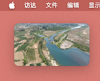
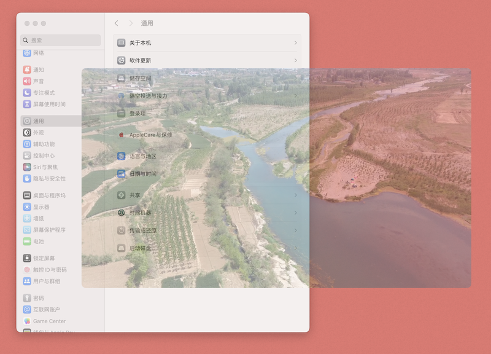
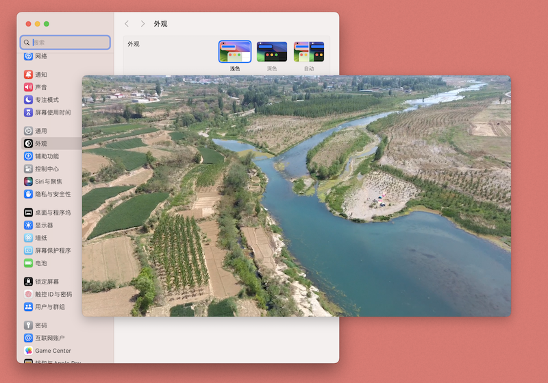
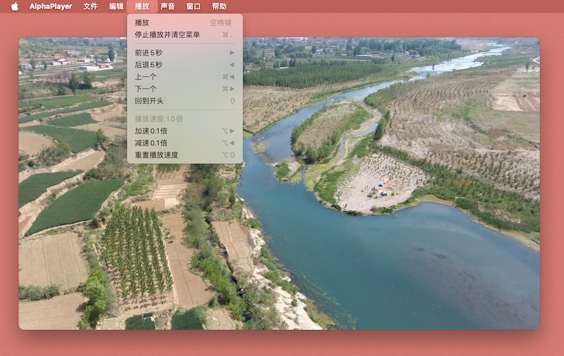
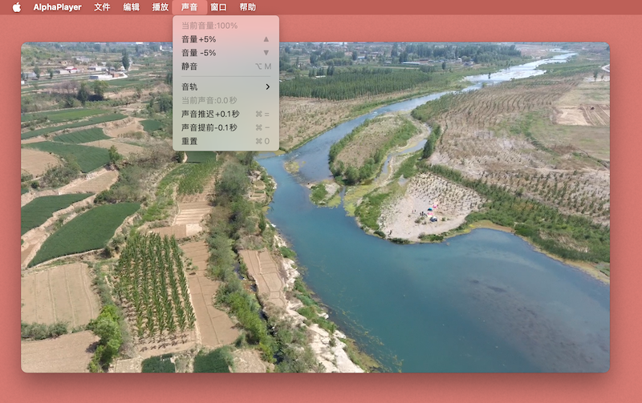
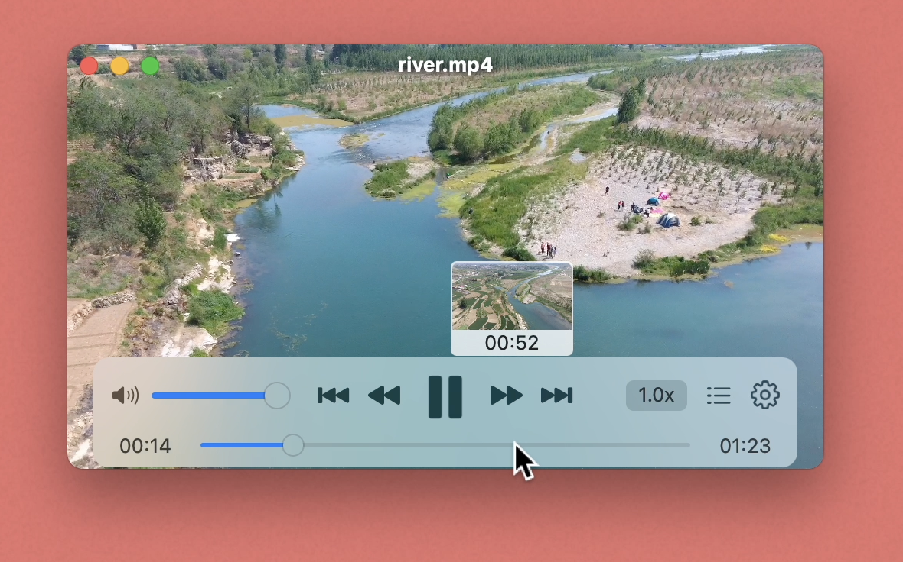
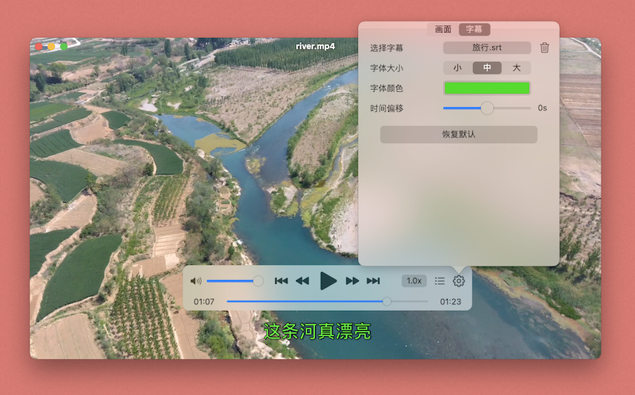
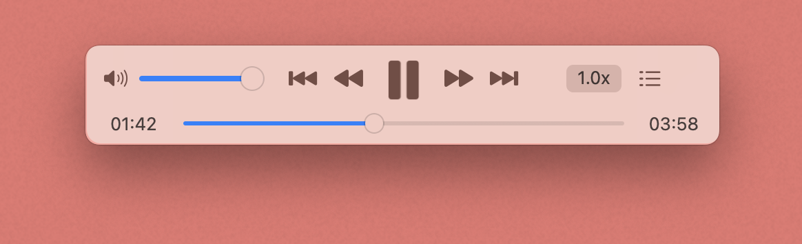

AlphaPlayer

功能介绍
这是一个可以设置窗口透明的全能播放器
你可以让它来播放任何音视频格式格(多达101种格式支持)。

你可以任意调整窗口的大小，甚至可以设置到拇指大小
调整窗口的透明度，让别人无法注意到你在看视频。
设置窗口层级，让窗口可以置顶显示，不被其他窗口所遮挡。
你可以通过键盘来控制播放器的一切功能，包括播放、暂停、快进、音量和加速播放等等。
 快速预览功能，可以让你快速查看并找到需要播放的位置。
你可以为视频添加字幕，并设置字幕的显示样式（字体大小，颜色，时间偏移）。
简洁的音乐播放界面，一定会让你喜欢。
其他功能
AirPods耳机控制，200%音量，最高3倍播放速度，播放列表（单曲循环，随机，无限循环），视频比例设置，画面旋转，画面翻转（水平翻转和垂直翻转），画面均衡设置。